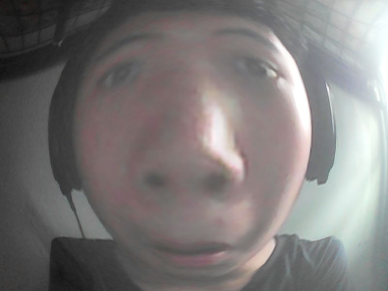

I'm a 13-year old student in Philippine Science High School, and I made this website for my Computer Science 3 project. There is another reason why I chose to make a website about this topic, though, and that reason is because of the environment I was, and am, living in. Of course, mental health issues are unfortunately popular in Generation Z; and I've noticed this in some of the people I've met. Some friends that I have are really insecure about a lot of things, like their physical appearance, or their 'unnatural' behavior. In apps like the popular social media platform TikTok, I've seen people post videos about their insecurities and flaws, but I rarely see videos that actually try and uplift the people who are going through something.
Let's get a little personal now! During 7th and 8th grade, I was struggling with lots of things, like being insecure, or feeling like I'll never be good enough, and I feel like the videos I used to encounter most of the time in the app were videos that would always bring me down. Of course, TikTok's a huge platform, and I encountered some videos that were against mental health sometimes, but they were always just videos made with AI with motivational quotes in the center. I didn't exactly hate or dislike these videos though, but sometimes I just wanted comfort from someone or someone to listen. Of course, this is just my own story. I know that other people are going through things, and I've made this small website to help other people work and care for themselves.
I'm Ras Zion, a 9th-grade student in Pisay. I really like and resonate with topics related to health, mental health, and the mind in general. I hope for the best for everyone in the world!